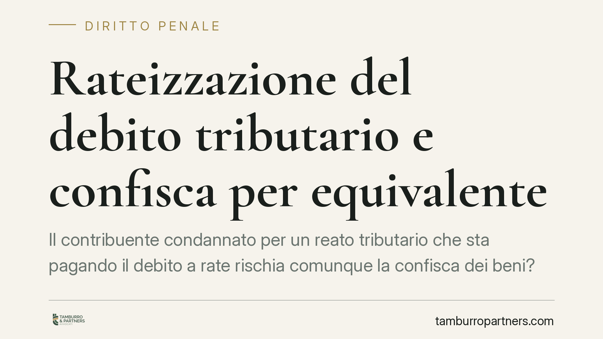

Rateizzazione del debito tributario e confisca per equivalente
Il contribuente condannato per un reato tributario che sta pagando il debito a rate rischia comunque la confisca dei beni? Una recente pronuncia della Corte di Cassazione torna sul rapporto tra piano di dilazione accettato dal Fisco e misura ablatoria, chiarendo quando quest'ultima non può essere portata a esecuzione. Il tema tocca la portata dell'art. 12-bis D.Lgs. 74/2000.

Il caso
Una contribuente condannata in via definitiva per un reato tributario aveva ottenuto dall'Agenzia delle Entrate un piano di rateizzazione del debito, che stava rispettando puntualmente. Nonostante ciò, si vedeva esposta alla confisca per equivalente dei propri beni per un importo pari all'imposta evasa. La domanda è diretta: se pago le tasse a rate, rischio ancora di perdere i beni?
La questione non è di dettaglio. La confisca per equivalente colpisce beni del condannato per un valore corrispondente al profitto del reato, anche quando quel profitto non è più materialmente rintracciabile. È una misura incisiva, e capire quando possa essere eseguita in presenza di un debito in corso di pagamento ha ricadute patrimoniali concrete.
Inquadramento normativo
Il riferimento è l'art. 12-bis del D.Lgs. 74/2000, che disciplina la confisca per i reati tributari. La norma prevede, in sintesi, che la confisca non operi per la parte di debito che il contribuente si impegna a versare all'erario, ferma restando la possibilità di disporre il sequestro a garanzia. Il testo dell'articolo è stato interessato da interventi di riforma, da ultimo con il D.Lgs. 87/2024: per questo si riporta qui una parafrasi del contenuto e non una citazione testuale, rinviando alla versione vigente per il tenore esatto.
La logica è ripristinatoria: la confisca mira a sottrarre il vantaggio economico del reato, non a sanzionare due volte lo stesso fatto. Se il contribuente sta già restituendo quel vantaggio attraverso un piano di pagamento accettato dal Fisco, eseguire contestualmente la confisca sull'intero importo produrrebbe una duplicazione: lo Stato recupererebbe due volte la medesima somma. Da qui il principio di proporzionalità che orienta l'interpretazione della norma.
Le implicazioni pratiche
Occorre distinguere tre piani, spesso confusi. Il sequestro è la misura cautelare che blocca i beni in attesa del giudizio e può essere mantenuto anche durante la rateizzazione, a garanzia del credito. La confisca è il provvedimento che trasferisce definitivamente i beni allo Stato all'esito della condanna. L'eseguibilità della confisca è il momento in cui quel provvedimento viene concretamente attuato.
Il punto chiarito dalla giurisprudenza è che la confisca, pur disposta con la sentenza, non può essere eseguita per la parte di debito che il contribuente sta regolarmente versando. Non si tratta quindi di una estinzione della misura, ma di una sospensione della sua eseguibilità finché il piano è rispettato. La misura resta, per così dire, sullo sfondo e torna attuabile se il pagamento si interrompe.
Questo equilibrio regge solo finché la rateizzazione è in vita. La decadenza dal piano fa venire meno la ragione che paralizzava l'esecuzione. Per le dilazioni erariali, l'art. 19 del DPR 602/1973 prevede che il mancato pagamento di un determinato numero di rate, anche non consecutive, comporti la decadenza dal beneficio e la riscossione dell'intero importo residuo. Chi non onora le scadenze, dunque, non perde solo l'agevolazione fiscale: riespone i propri beni alla confisca.
Cosa fare in concreto
- Verificare lo stato del piano di rateizzazione: controllare le scadenze e l'importo residuo, perché la sospensione della confisca dipende dalla puntualità dei versamenti.
- Monitorare il numero di rate scadute: è opportuno conoscere la soglia prevista dall'art. 19 DPR 602/1973 oltre la quale scatta la decadenza dal piano.
- Conservare le ricevute di pagamento: in sede esecutiva la prova dei versamenti effettuati è decisiva per contestare l'eseguibilità della confisca.
- Segnalare tempestivamente eventuali difficoltà: in caso di temporanea impossibilità a pagare, è opportuno valutare con il Fisco le soluzioni disponibili prima di incorrere nella decadenza.
- Chiedere assistenza prima della fase esecutiva: le eccezioni sull'eseguibilità vanno sollevate nelle sedi e nei tempi corretti.
Una precisazione necessaria
Va ricordato che il principio esposto non estingue il reato né cancella il debito tributario. Il contribuente resta condannato e resta obbligato a pagare. L'orientamento incide esclusivamente sul profilo esecutivo della confisca, impedendone l'attuazione sulla parte di somma che si sta già restituendo all'erario. È un punto di equilibrio tra esigenze di recupero e divieto di duplicazione sanzionatoria, non una via d'uscita dalla responsabilità.
> Nota per il revisore: gli estremi della pronuncia citata nella fonte (sez. e numero) sono da verificare prima della pubblicazione; nel testo si è usata la formula prudente 'una recente pronuncia'.
Disclaimer
Contributo informativo a cura di Tamburro & Partners - Avv. Giuseppe Tamburro. Non costituisce parere legale.
Ogni condominio ha una storia a sé.
Se gestisci un'amministrazione e vuoi un confronto su una specifica questione condominiale, scrivi allo studio. Ti rispondiamo entro un giorno lavorativo.